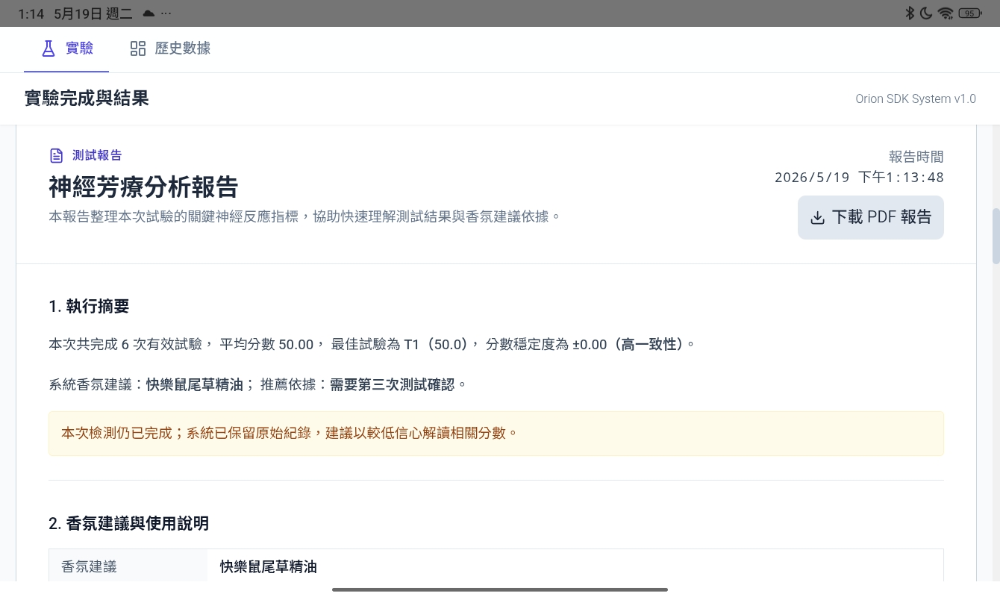
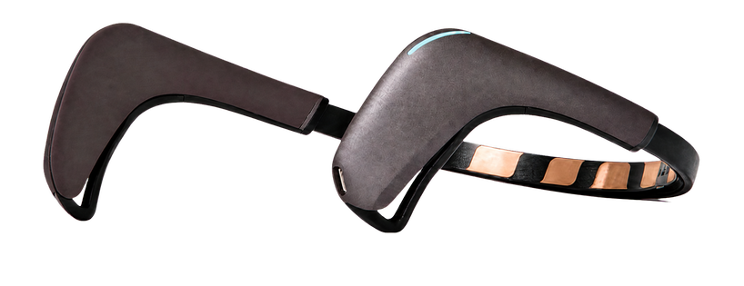

現場完成
受測者依照 Android 流程完成基準、嗅聞與休息。
Orion 整合腦波 EEG、六款香氣樣本與 Android 測試流程，將嗅聞體驗轉成可比較、可交付的研究結果。

展示時看得到完整產品，不只是一段概念。
固定流程，讓每次測試能被比較。
測試後產生推薦、指標與報告。
快速確認場域、樣本與合作節奏。
香氣效果常難以被說清楚。Orion 用現場測試、腦波指標與報告輸出，讓產品展示更容易進入試測與合作。
受測者依照 Android 流程完成基準、嗅聞與休息。
同一流程比較六款香氣，形成推薦方向。
SRI/ARI 對照個人基準，呈現香氣反應。
PDF 與雲端紀錄讓會後討論有共同依據。
結果包含分數、香氣建議與紀錄，可支援試測、研究與導入評估。


連接、測試、評分、同步；每一步都能在展示現場驗證。
透過藍牙建立 EEG 資料串流。
依畫面與語音完成嗅聞節奏。
擷取頻帶特徵並計算 SRI/ARI。
同步測試紀錄，方便後續檢視。
Orion 以個人無香氣基準作比較，將 EEG 特徵轉成研究與產品評估用指標；不作醫療診斷。
適合配方比較、研究紀錄、場域體驗與合作導入。
比較配方、濃度與體驗情境。
建立可回溯的嗅覺測試紀錄。
以友善流程展示香氣與放鬆研究。
評估導入情境與合作節奏。
一套工具支援現場展示、試行導入與研究討論。
欖亞顧問股份有限公司以真實使用需求為起點，整合 Android、嵌入式架構、設備資料串流、演算法驗證與場域測試，完成從腦波擷取到報告交付的一體化產品流程。
Orion 由具美國知名外商經驗的資深工程師與技術主管，攜手投資專業人士、商業拓展主管、區域商業總監及財務分析總監共同打造，兼顧系統架構、使用體驗與商業落地。
從使用情境、測試流程到功能驗證，讓每次產品迭代回到真實需求。
整合腦波 EEG、Android 應用、嵌入式架構與設備資料串流。
以實際測試持續改善連線、操作、資料與報告品質。
留下資訊，我們會安排展示、測試體驗或合作討論。送出後會開啟預填郵件。